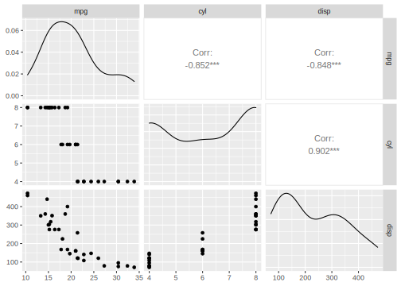
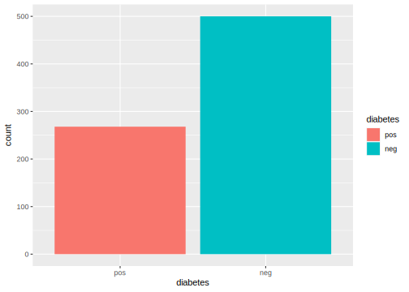
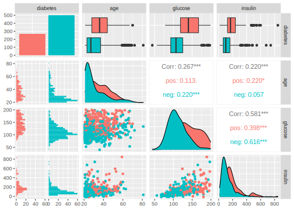
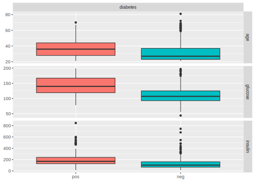
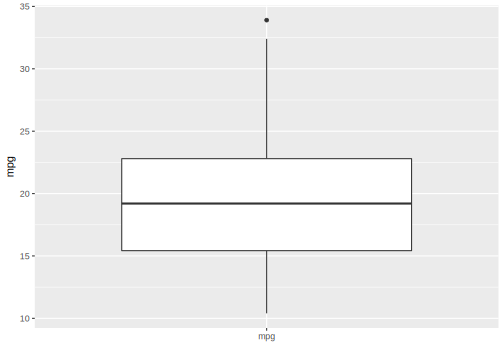
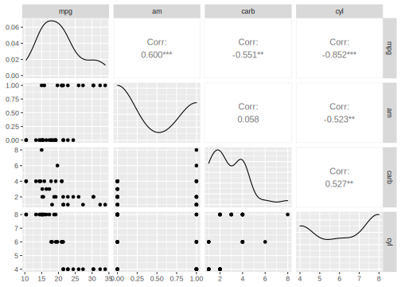

2.2 Tasks
Tasks are objects that contain the (usually tabular) data and additional meta-data to define a machine learning problem. The meta-data is, for example, the name of the target variable for supervised machine learning problems, or the type of the dataset (e.g. a spatial or survival). This information is used for specific operations that can be performed on a task.
2.2.1 Task Types
To create a task from a data.frame(), data.table() or Matrix(), you first need to select the right task type:
Classification Task: The target is a label (stored as
character()orfactor()) with only few distinct values.
→TaskClassif.Regression Task: The target is a numeric quantity (stored as
integer()ordouble()).
→TaskRegr.Survival Task: The target is the (right-censored) time to an event. More censoring types are currently in development.
→mlr3proba::TaskSurvin add-on package mlr3proba.Density Task: An unsupervised task to estimate the density.
→mlr3proba::TaskDensin add-on package mlr3proba.Cluster Task: An unsupervised task type; there is no target and the aim is to identify similar groups within the feature space.
→mlr3cluster::TaskClustin add-on package mlr3cluster.Spatial Task: Observations in the task have spatio-temporal information (e.g. coordinates).
→mlr3spatiotempcv::TaskRegrSTormlr3spatiotempcv::TaskClassifSTin add-on package mlr3spatiotempcv.Ordinal Regression Task: The target is ordinal.
→TaskOrdinalin add-on package mlr3ordinal (still in development).
2.2.2 Task Creation
As an example, we will create a regression task using the mtcars data set from the package datasets and predict the numeric target variable "mpg" (miles per gallon).
We only consider the first two features in the dataset for brevity.
First, we load and prepare the data.
data("mtcars", package = "datasets")
data = mtcars[, 1:3]
str(data)## 'data.frame': 32 obs. of 3 variables:
## $ mpg : num 21 21 22.8 21.4 18.7 18.1 14.3 24.4 22.8 19.2 ...
## $ cyl : num 6 6 4 6 8 6 8 4 4 6 ...
## $ disp: num 160 160 108 258 360 ...Next, we create a regression task, i.e. we construct a new instance of the R6 class TaskRegr.
Usually, this is done by calling the constructor TaskRegr$new().
Instead, we are calling the converter as_task_regr() to convert our data.frame() stored as data to a task and provide the following information:
x: Object to convert. Works fordata.frame()/data.table()/tibble()abstract data backends implemented in the classDataBackendDataTable. The latter allows to connect to out-of-memory storage systems like SQL servers via the extension package mlr3db.target: The name of the target column for the regression problem.id(optional): An arbitrary identifier for the task, used in plots and summaries. If not provided, the deparsed and substituted name ofxwill be used.
library("mlr3")
task_mtcars = as_task_regr(data, target = "mpg", id = "cars")
print(task_mtcars)## <TaskRegr:cars> (32 x 3)
## * Target: mpg
## * Properties: -
## * Features (2):
## - dbl (2): cyl, dispThe print() method gives a short summary of the task:
It has 32 observations and 3 columns, of which 2 are features.
We can also plot the task using the mlr3viz package, which gives a graphical summary of its properties:
library("mlr3viz")
autoplot(task_mtcars, type = "pairs")
Note that instead of loading all the extension packages individually, it is often more convenient to load the mlr3verse package instead.
mlr3verse imports most mlr3 packages and re-exports functions which are used for regular machine learning and data science tasks.
2.2.3 Predefined tasks
mlr3 ships with a few predefined machine learning tasks.
All tasks are stored in an R6 Dictionary (a key-value store) named mlr_tasks.
Printing it gives the keys (the names of the datasets):
mlr_tasks## <DictionaryTask> with 11 stored values
## Keys: boston_housing, breast_cancer, german_credit, iris, mtcars,
## penguins, pima, sonar, spam, wine, zooWe can get a more informative summary of the example tasks by converting the dictionary to a data.table() object:
as.data.table(mlr_tasks)## key task_type nrow ncol properties lgl int dbl chr fct ord pxc
## 1: boston_housing regr 506 19 0 3 13 0 2 0 0
## 2: breast_cancer classif 683 10 twoclass 0 0 0 0 0 9 0
## 3: german_credit classif 1000 21 twoclass 0 3 0 0 14 3 0
## 4: iris classif 150 5 multiclass 0 0 4 0 0 0 0
## 5: mtcars regr 32 11 0 0 10 0 0 0 0
## 6: penguins classif 344 8 multiclass 0 3 2 0 2 0 0
## 7: pima classif 768 9 twoclass 0 0 8 0 0 0 0
## 8: sonar classif 208 61 twoclass 0 0 60 0 0 0 0
## 9: spam classif 4601 58 twoclass 0 0 57 0 0 0 0
## 10: wine classif 178 14 multiclass 0 2 11 0 0 0 0
## 11: zoo classif 101 17 multiclass 15 1 0 0 0 0 0In the above display, the columns "lgl" (logical), "int" (integer), "dbl" (double), "chr" (character), "fct" (factor), "ord" (ordered factor) and "pxc" (POSIXct time) display the number of features in the dataset with the corresponding storage type.
To get a task from the dictionary, one can use the $get() method from the mlr_tasks class and assign the return value to a new object.
Since mlr3 arranges most of its object instances in dictionaries and extraction is such a common task, there is a shortcut for this: the function tsk().
Here, we retrieve the palmer penguins task originating from the package palmerpenguins:
task_penguins = tsk("penguins")
print(task_penguins)## <TaskClassif:penguins> (344 x 8)
## * Target: species
## * Properties: multiclass
## * Features (7):
## - int (3): body_mass, flipper_length, year
## - dbl (2): bill_depth, bill_length
## - fct (2): island, sexNote that dictionaries such as mlr_tasks can get populated by extension packages.
E.g., mlr3data comes with some more example and toy tasks for regression and classification, and mlr3proba ships with additional survival and density estimation tasks.
Both packages will get loaded once we load the mlr3verse package, so we do it here and have a look at the available tasks again:
library(mlr3verse)
as.data.table(mlr_tasks)[, 1:4]## key task_type nrow ncol
## 1: actg surv 1151 13
## 2: boston_housing regr 506 19
## 3: breast_cancer classif 683 10
## 4: faithful dens 272 1
## 5: gbcs surv 686 10
## 6: german_credit classif 1000 21
## 7: grace surv 1000 8
## 8: iris classif 150 5
## 9: kc_housing regr 21613 20
## 10: lung surv 228 10
## 11: moneyball regr 1232 15
## 12: mtcars regr 32 11
## 13: optdigits classif 5620 65
## 14: penguins classif 344 8
## 15: pima classif 768 9
## 16: precip dens 70 1
## 17: rats surv 300 5
## 18: sonar classif 208 61
## 19: spam classif 4601 58
## 20: titanic classif 1309 11
## 21: unemployment surv 3343 6
## 22: usarrests clust 50 4
## 23: whas surv 481 11
## 24: wine classif 178 14
## 25: zoo classif 101 17
## key task_type nrow ncolTo get more information about the respective task, the corresponding man page can be found under mlr_tasks_[id], e.g. mlr_tasks_german_credit.
2.2.4 Task API
All task properties and characteristics can be queried using the task’s public fields and methods (see Task).
Methods can also be used to change the stored data and the behavior of the task.
2.2.4.1 Retrieving Data
The data stored in a task can be retrieved directly from fields, for example:
task_mtcars## <TaskRegr:cars> (32 x 3)
## * Target: mpg
## * Properties: -
## * Features (2):
## - dbl (2): cyl, disptask_mtcars$nrow## [1] 32task_mtcars$ncol## [1] 3More information can be obtained through methods of the object, for example:
task_mtcars$data()## mpg cyl disp
## 1: 21.0 6 160.0
## 2: 21.0 6 160.0
## 3: 22.8 4 108.0
## 4: 21.4 6 258.0
## 5: 18.7 8 360.0
## 6: 18.1 6 225.0
## 7: 14.3 8 360.0
## 8: 24.4 4 146.7
## 9: 22.8 4 140.8
## 10: 19.2 6 167.6
## 11: 17.8 6 167.6
## 12: 16.4 8 275.8
## 13: 17.3 8 275.8
## 14: 15.2 8 275.8
## 15: 10.4 8 472.0
## 16: 10.4 8 460.0
## 17: 14.7 8 440.0
## 18: 32.4 4 78.7
## 19: 30.4 4 75.7
## 20: 33.9 4 71.1
## 21: 21.5 4 120.1
## 22: 15.5 8 318.0
## 23: 15.2 8 304.0
## 24: 13.3 8 350.0
## 25: 19.2 8 400.0
## 26: 27.3 4 79.0
## 27: 26.0 4 120.3
## 28: 30.4 4 95.1
## 29: 15.8 8 351.0
## 30: 19.7 6 145.0
## 31: 15.0 8 301.0
## 32: 21.4 4 121.0
## mpg cyl dispIn mlr3, each row (observation) has a unique identifier, stored as an integer().
These can be passed as arguments to the $data() method to select specific rows:
head(task_mtcars$row_ids)## [1] 1 2 3 4 5 6# retrieve data for rows with ids 1, 5, and 10
task_mtcars$data(rows = c(1, 5, 10))## mpg cyl disp
## 1: 21.0 6 160.0
## 2: 18.7 8 360.0
## 3: 19.2 6 167.6Note that although the row ids are typically just the sequence from 1 to nrow(data), they are only guaranteed to be unique natural numbers.
Keep that in mind, especially if you work with data stored in a real data base management system (see backends).
Similarly to row ids, target and feature columns also have unique identifiers, i.e. names (stored as character()).
Their names can be accessed via the public slots $feature_names and $target_names.
Here, “target” refers to the variable we want to predict and “feature” to the predictors for the task.
task_mtcars$feature_names## [1] "cyl" "disp"task_mtcars$target_names## [1] "mpg"The row_ids and column names can be combined when selecting a subset of the data:
# retrieve data for rows 1, 5, and 10 and only select column "mpg"
task_mtcars$data(rows = c(1, 5, 10), cols = "mpg")## mpg
## 1: 21.0
## 2: 18.7
## 3: 19.2To extract the complete data from the task, one can also simply convert it to a data.table:
summary(as.data.table(task_mtcars))## mpg cyl disp
## Min. :10.4 Min. :4.00 Min. : 71.1
## 1st Qu.:15.4 1st Qu.:4.00 1st Qu.:120.8
## Median :19.2 Median :6.00 Median :196.3
## Mean :20.1 Mean :6.19 Mean :230.7
## 3rd Qu.:22.8 3rd Qu.:8.00 3rd Qu.:326.0
## Max. :33.9 Max. :8.00 Max. :472.02.2.4.2 Roles (Rows and Columns)
It is possible to assign different roles to rows and columns. These roles affect the behavior of the task for different operations. We already seen this for the target and feature columns which serve a different purpose.
For example, the previously-constructed mtcars task has the following column roles:
print(task_mtcars$col_roles)## $feature
## [1] "cyl" "disp"
##
## $target
## [1] "mpg"
##
## $name
## character(0)
##
## $order
## character(0)
##
## $stratum
## character(0)
##
## $group
## character(0)
##
## $weight
## character(0)
##
## $uri
## character(0)Columns can also have no role (they are ignored) or have multiple roles.
To add the row names of mtcars as an additional feature, we first add them to the data table as regular column and then recreate the task with the new column.
# with `keep.rownames`, data.table stores the row names in an extra column "rn"
data = as.data.table(datasets::mtcars[, 1:3], keep.rownames = TRUE)
task_mtcars = as_task_regr(data, target = "mpg", id = "cars")
# there is a new feature called "rn"
task_mtcars$feature_names## [1] "cyl" "disp" "rn"The row names are now a feature whose values are stored in the column "rn".
We include this column here for educational purposes only.
Generally speaking, there is no point in having a feature that uniquely identifies each row.
Furthermore, the character data type will cause problems with many types of machine learning algorithms.
On the other hand, the identifier may be useful to label points in plots, for example to identify and label outliers.
Therefore we will change the role of the rn column by removing it from the list of features and assign the new role "name".
There are two ways to do this:
- Use the
Taskmethod$set_col_roles()(recommended). - Simply modify the field
$col_roles, which is a named list of vectors of column names. Each vector in this list corresponds to a column role, and the column names contained in that vector are designated as having that role.
Supported column roles can be found in the manual of Task, or just by printing the names of the field $col_roles:.
# supported column roles, see ?Task
names(task_mtcars$col_roles)## [1] "feature" "target" "name" "order" "stratum" "group" "weight"
## [8] "uri"# assign column "rn" the role "name", remove from other roles
task_mtcars$set_col_roles("rn", roles = "name")
# note that "rn" not listed as feature anymore
task_mtcars$feature_names## [1] "cyl" "disp"# "rn" also does not appear anymore when we access the data
task_mtcars$data(rows = 1:2)## mpg cyl disp
## 1: 21 6 160
## 2: 21 6 160task_mtcars$head(2)## mpg cyl disp
## 1: 21 6 160
## 2: 21 6 160Changing the role does not change the underlying data, it just updates the view on it. The data is not copied in the code above. The view is changed in-place though, i.e. the task object itself is modified.
Just like columns, it is also possible to assign different roles to rows.
Rows can have two different roles:
Role
use: Rows that are generally available for model fitting (although they may also be used as test set in resampling). This role is the default role.Role
validation: Rows that are not used for training. Rows that have missing values in the target column during task creation are automatically set to the validation role.
There are several reasons to hold some observations back or treat them differently:
- It is often good practice to validate the final model on an external validation set to identify possible overfitting.
- Some observations may be unlabeled, e.g. in competitions like Kaggle.
These observations cannot be used for training a model, but can be used to get predictions.
2.2.4.3 Task Mutators
As shown above, modifying $col_roles or $row_roles (either via set_col_roles()/set_row_roles() or directly by modifying the named list) changes the view on the data.
The additional convenience method $filter() subsets the current view based on row ids and $select() subsets the view based on feature names.
task_penguins = tsk("penguins")
task_penguins$select(c("body_mass", "flipper_length")) # keep only these features
task_penguins$filter(1:3) # keep only these rows
task_penguins$head()## species body_mass flipper_length
## 1: Adelie 3750 181
## 2: Adelie 3800 186
## 3: Adelie 3250 195While the methods discussed above allow to subset the data, the methods $rbind() and $cbind() allow to add extra rows and columns to a task.
Again, the original data is not changed.
The additional rows or columns are only added to the view of the data.
task_penguins$cbind(data.frame(letters = letters[1:3])) # add column foo
task_penguins$head()## species body_mass flipper_length letters
## 1: Adelie 3750 181 a
## 2: Adelie 3800 186 b
## 3: Adelie 3250 195 c2.2.5 Plotting Tasks
The mlr3viz package provides plotting facilities for many classes implemented in mlr3. The available plot types depend on the inherited class, but all plots are returned as ggplot2 objects which can be easily customized.
For classification tasks (inheriting from TaskClassif), see the documentation of mlr3viz::autoplot.TaskClassif for the implemented plot types.
Here are some examples to get an impression:
library("mlr3viz")
# get the pima indians task
task = tsk("pima")
# subset task to only use the 3 first features
task$select(head(task$feature_names, 3))
# default plot: class frequencies
autoplot(task)
# pairs plot (requires package GGally)
autoplot(task, type = "pairs")
# duo plot (requires package GGally)
autoplot(task, type = "duo")
Of course, you can do the same for regression tasks (inheriting from TaskRegr) as documented in mlr3viz::autoplot.TaskRegr:
library("mlr3viz")
# get the complete mtcars task
task = tsk("mtcars")
# subset task to only use the 3 first features
task$select(head(task$feature_names, 3))
# default plot: boxplot of target variable
autoplot(task)
# pairs plot (requires package GGally)
autoplot(task, type = "pairs")